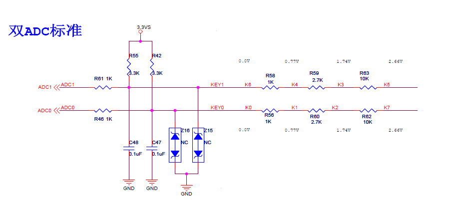
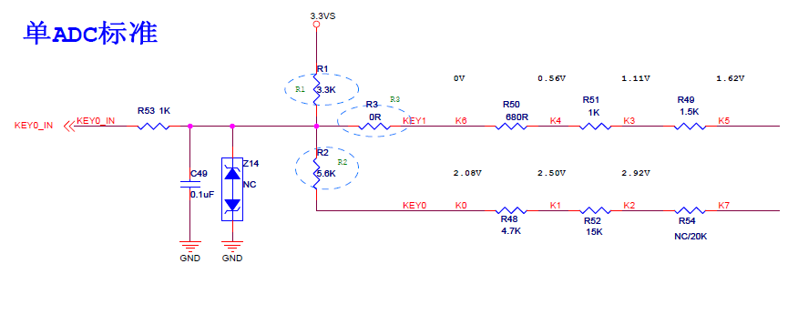
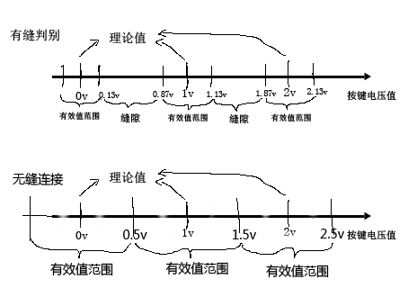

TV平台按键板学习 [返回首页]
概要：
TV首先是作为一个传送活动的图像画面和音频信号的设备，其次也是重要的广播
和视屏通讯工具。既然是设备，在与人的交互过程中就需要一些输入控制动作，这些
简单的输入功能的应用就产生了按键板，通俗的说，按键板就是人与TV交互的工具，
因此在早期的TV平台上按键板是必不可少的，后来随着技术的发展，红外遥控的出现，
按键板在实际的生活中退居二线，作为辅助角色存在。
二、Mstar-Nonos-Code中按键板的实现 [返回顶部]
1.原理图


2.采样方式和上层处理
a.由上图可以看出，按键板中的按键是以不同的电压作为判别的标准来区分按键的。
通过使用电阻分压的方式来实现。
b.IC采到对应按键的电压后，会通过A\D转换器将电压量化为用于IC处理的数字信号。
然后存储在对应的寄存器中，用于上层处理使用。
c.接着上层应用程序读取存储在寄存器中的电压数值，由于寄存器中存储的为二进制
，因此在使用时需要进行转化（转化过程封装的Code已经实现，不用我们实现）。然后将
读取的数字与我们预先设定的理论值进行对比，满足波动范围的即为有效按键值，不满足
的视为无效值，若为有效值，上层就会选择对应的功能执行，若为无效值，软件会抛弃这
个值，不做处理。
三、Mstar-Nonos-Code中按键板的软件实现 [返回顶部]
1.由于ADC采样，A\D转化，电压值存储等都是硬件自动完成的，因此在这里不做介绍。
2.主要讲解上层读取寄存器到执行功能的处理过程：
a.文件 MApp_MultiTasks.c 文件中的 MApp_MultiTasks（） 函数会一直在跑，这个函数
中首先会用函数 MApp_ProcessUserInput()检验用户的输入，即按键板也是在这里侦
测的。在用户输入函数中用 MApp_CheckKeyStatus()判断用户是否有按键按下，如果
有按键按下，即 msAPI_GetKeyPad(&key, &KeyRepeatStatus)返回 MSRET_OK，那么在
参数key中会取得按键的码值，然后将key中的值赋专门用来存储按键值的变量------
stKeyStatus.keydata，直接被上层使用；否则不做任何处理，等待下一次输入。
b.那么 msAPI_GetKeyPad(&key, &KeyRepeatStatus)是如何获取key的呢？首先在这个函
数体内可以看到已经有一个专门的封装函数msKeypad_GetKey(u8key, u8Repstatus)，
跳入定义的地方发现，是一个for循环在检测所有的ADC采样通道，循环中函数------
msKeypad_CH_GetKey(Channel, pkey, pflag)用来检测所有的通道，并获取码值。函数
msKeypad_CH_GetKey(Channel, pkey, pflag)是整个按键板学习的关键，里面涉及了很
多对按键处理的知识点，确保了获取的码值是正确的。
c.接下来剖析函数msKeypad_CH_GetKey()
首先函数的一开始都是初始化，这里说两个，一个是存储按键的key值：*pkey = 0xFF;
然后是存储8个按键状态值的数组KEY_LV[i]，用for循环初始化：
for(i=0; i<ADC_KEY_LEVEL; i++)
KEY_LV[i] = 0;
接着，函数 msKeypad_GetChanIndex(Channel)用来确定当前检测的ADC线路是否为可用
的线路，返回对应ID ，如果可用，软件会将一组我们给定的理论值数组和与值对应的
功能flag 数组分别赋值给指针 KeyLevelmap和Keymapping用于后续的码值检验。
然后为取码最关键的部分，即要确定码值的有效范围，接下来为两个f嵌套的or循环用来
确保取到的值为正确的按键值：作用如下
for（i=0;i<6;i++） 用来连续取6次值，确保按键稳定
{
for（i=0;i<8;i++） 每次取值都要查询8个按键状态，确保不漏取
{
//码值范围锁定，然后按键状态加一，表示一次取值成功
}
}
在上面第二个for循环中一般情况下为锁定范围为理论值上下波动0.13V即可，但是由于在
实际的执行当中很有一些劣质的按键板跳出理论范围，因此，此处经过改进采用无缝连接
做法。以下为形象说明：

从上图可以看出无缝连接的有效范围即取两个数中间的值为边界，这样的话，按键无论有无波
动，都会落在一个区间内，从而避免无法采样导致的按键无作用的问题。
接下来就是用一个for循环通过判断成功的次数，确定哪个按键按下了，然后通过时间计数判定
是否为repeat按键。这样按键值就被取出来了，紧接着通过和Keymapping指向的功能数组比对，
获取相应的功能键值供上层调用。
四、配置按键板时，码值如何获得 [返回顶部]
1.第一种方法：
首先要确定自己的板子型号，根据型号在source insight中的用户文件中找对应的按键板，记下。
确认使用的按键板通道。
在keypad.c文件中查看函数U8 GetUSB_UpdateDetect(void)和msKeypad_Get_ADC_Channel(U8 Channel, U8 *pvalue)
通过第二个函数可以找到对应的按键寄存器
通过debug工具找到对应的寄存器，按键取值。
然后在对应的主板文件中找到对应的按键板程序，按通道修改即可。
温馨提示：第一通道是后面变，第二通道是前面变。每个通道都是从上到下由小到大。
2.第二种方法：
直接看板卡原理图，按标注的理论值填写。
感谢查阅 [返回顶部]